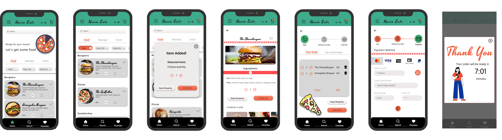
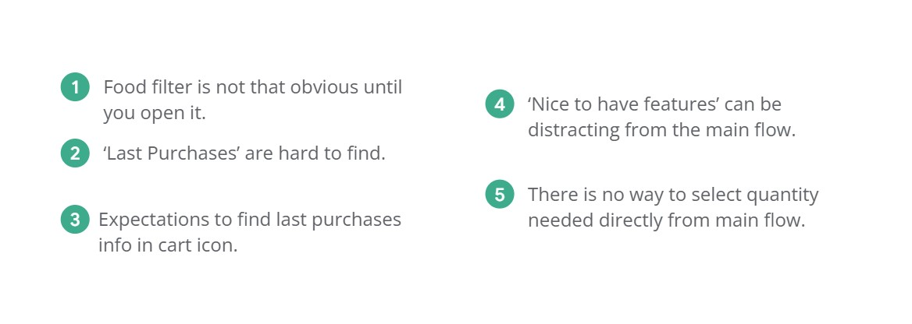

Movie Eats

This was my first assignment for the Google UX Design certificate I've recently finished.
I had to pick a prompt with an idea for an app and I chose to design an app to order snacks at a
cinema: 'Movie Eats'.
This app was designed to be used on mobile devices as it is the way people would normally order
food while at the cinema.
Houston, we have a problem
Many cinemas do not offer a digital way of ordering snacks and the ones that do, lack variety in food
or lists of ingredients making the whole experience a little frustrating for
customers.
It is estimated that 40% of moviegoers buy concessions every time they visit a cinema, this
makes snacks a big part of the business’ profits so making the whole snack experience just an afterthought translates into a lost opportunity for cinemas to make an additional profit.
The critics
The Plot
To maximize businesses' profits by offering a fast and intuitive UI that allows customers to easily purchase snacks while skipping waiting lines and providing detailed
information about food options to accommodate different dietary needs.
Problem Statement
'Norma is an active senior citizen who needs an easy app that won't make her feel alienated from technology so she can enjoy the snack side of the cinema experience
all while making sure she can browse proper food categories suitable for her and her grandchildren's different dietary needs.'
Competitive Audit
I audited 2 direct and 1 indirect competitors: Showcase cinemas, Hoyts cinemas, and Candy
Cloud.
My direct competitors are well-known cinemas worldwide with branches in Argentina and the indirect is
a snack store.
One of the cinemas, Showcase cinemas, has snacks arranged by categories but they don't provide any
information regarding the type of food or ingredients, whereas Hoyts cinemas do not have many options
available (in Argentina).
The visual design of both is slick and modern, but in the case of Showcase cinemas, the number of
different types of options available like dine-in, take-away, added benefits for an extra fee, etc
makes it a little too busy for the eye.
There are also some accessibility issues like small font or the use of foreign words, like
'candy', in a country where English is not mainstream that could frustrate or exclude users
who don't know the meaning of such word from the whole experience altogether.
Behind the scenes
The pilot
Take 1
The usability study of the first wireframes revealed that:

Take 2
And the award goes to...
Accessibility Considerations
Takeaways
Impact
‘I found this app really easy to use and I really like
the fact that I can filter my food and find vegan
options even at the cinema, a sign that the world
is evolving’.
Betiana, participant number 5.
What I've learned
This was my first project and my introduction to the whole design thinking based on the user approach.
I learned that getting people's views and keeping the user's goals along the entire process is really eye-opening but it also helpful since it works as a guide
and the result you come up at the end would not only be beautiful but usable and useful which is what constitutes good design.